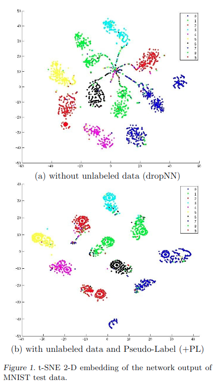
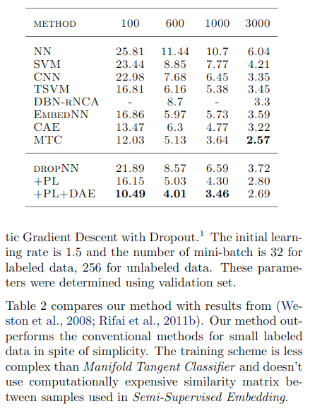

半监督学习：pseudo label
入坑半监督学习苦于找不到好的学习资料，不过就在昨天我发现了一个宝藏repo，那就是谷歌research的fixmatch仓库，是一套半监督算法的框架，包含数十种半监督算法，简直是入坑半监督学习的最佳教程😆
话不多说，先来看第一个算法pseudo label,发表与2013年。
pseudo label算法理论
pseudo label将未标记数据的目标类视为真实标签。我们只选择每个未标记样本具有最大预测概率的类别： \[
\begin{align}
y_{i}^{\prime}=\left\{\begin{array}{ll}
{1} & {\text { if } i=\operatorname{argmax}_{i^{\prime}} f_{i^{\prime}}(x)} \\
{0} & {\text { otherwise }}
\end{array}\right.
\end{align}
\]
在带有Dropout的微调阶段使用Pseudo Label。预先训练的网络以带标签和未标签数据的同步方式进行训练。对于未标记的数据，每次权重更新时重新计算的伪标签用于监督学习任务的相同损失函数，由于标记数据和未标记数据的总数完全不同，并且它们之间的训练平衡对于网络性能非常重要，因此总体损失函数为： \[
\begin{align}
L=\frac{1}{n} \sum_{m=1}^{n} \sum_{i=1}^{C} L\left(y_{i}^{m}, f_{i}^{m}\right)+\alpha(t) \frac{1}{n^{\prime}} \sum_{m=1}^{n^{\prime}} \sum_{i=1}^{C} L\left(y_{i}^{\prime m}, f_{i}^{\prime m}\right)
\end{align}
\]
其中\(n\)是SGD的标记数据中的小批量数量，\(n'\)表示未标记的数据，\(f^m_i\)是标记数据中第\(m\)的样本的输出，\(y^m_i\)是该标记的标签，\(f'^m_i\)表示未标记的数据，\(y'^m_i\)是未标记数据的pseudo label，\(\alpha(t)\)是一个平衡它们的系数。
\(\alpha(t)\)的正确调度对于网络性能非常重要。如果\(\alpha(t)\)太高，甚至会干扰标记数据的训练。鉴于\(\alpha(t)\)太小，我们无法使用未标记数据带来的收益。此外，确定性退火过程（通过逐步降低\(\alpha(t)\)）有望帮助优化过程避免较差的局部最小值，从而使未标记数据的伪标记类似于尽可能贴上真实标签，因此：
\[ \begin{align} \alpha(t)=\left\{\begin{array}{ll} {0} & {t<T_{1}} \\ {\frac{t-T_{1}}{T_{2}-T_{1}} \alpha_{f}} & {T_{1} \leq t<T_{2}} \\ {\alpha_{f}} & {T_{2} \leq t} \end{array}\right. \end{align} \]
在没有预训练的情况下，\(\alpha f= 3,T1 = 100,T2 = 600\)，使用去噪自编码器预训练后\(T1 = 200，T2 = 800\)。
为什么伪标签会起作用？
类别之间的低密度分离
半监督学习的目标是使用未标记的数据来提高泛化性能。集群假设指出决策边界应位于低密度区域以提高泛化性能（Chapelle et al。，2005）。最近提出了使用流形学习的神经网络训练方法，例如半监督嵌入和流形切空间分类器，利用了这种假设。嵌入（Westonet等人，2008）使用基于嵌入的正则化器来提高深度神经网络的泛化性能。由于通过基于嵌入的惩罚项，数据样本的邻居与样本具有相似的激活，因此高密度区域中的数据样本更有可能具有相同的标签.ManifoldTangent分类器（Rifai等人，2011b）鼓励网络输出不敏感低维流形方向的变化因此达到了相同的目的。
熵正则化
熵正则化（Grandvalet et al。，2006）意味着可以从最大后验估计框架中的未标记数据中受益。该方案通过最小化未标记数据的类概率的条件熵，有利于类之间的低密度分离，而无需对密度进行任何建模。 \[ \begin{align} H\left(y | x^{\prime}\right)=-\frac{1}{n^{\prime}} \sum_{m=1}^{n^{\prime}} \sum_{i=1}^{C} P\left(y_{i}^{m}=1 | x^{\prime m}\right) \log P\left(y_{i}^{m}=1 | x^{\prime m}\right) \end{align} \]
其中，\(n'\)是未标记数据的数量，\(C\)是类的数量，\(y^m_i\)是未标记样本的未知标签，\(x'\)是第\(m\)个输入的未标记向量，熵是类重叠的度量。随着类重叠的减少，决策点的数据点密度降低，MAP估计定义为后验分布的最大化： \[ \begin{align} C(\theta, \lambda)=\sum_{m=1}^{n} \log P\left(y^{m} | x^{m} ; \theta\right)-\lambda H\left(y | x^{\prime} ; \theta\right) \end{align} \]
其中\(n\)是标记数据的数量，\(x^m\)是第\(m\)个标记样本，\(\lambda\)是使两项平衡的系数。通过最大化带标签数据的条件对数似然性（第一项），同时使未标记数据的熵（第二项）最小，我们可以使用未标记的数据获得更好的泛化性能。
以伪标签作为熵正则化训练
通过使用未标记的数据和伪标签进行训练来鼓励预测的类概率接近其中一项，因此将伪标签条件熵减到最小。因此，我们的方法等效于熵正则化。后验分布的第一项对应于损失函数的第一项，后验分布的第二项对应于损失的第二项，\(\alpha(t)\)对应于\(\lambda\)。
图1显示了t-SNE（Van der Maaten等人，2008年）MNISTtest数据（不包含在未标记数据中）的网络输出的2D嵌入结果。用600个标记数据训练了神经网络，60000个未标记数据和用或没用伪标签训练了神经网络。尽管在两种情况下训练误差为零，但通过训练，使用伪标签的网络输出测试数据更集中在每一项附近，换句话说，将MAP估计熵最小化。

表2显示了MAP的估计熵。尽管两种情况下标记数据的熵都接近于零，但是通过伪标签训练，未标记数据的熵变低，此外，测试数据的熵也随之变低。这甚至使测试数据的分类问题也变得更加容易，并使决策边界处的数据点密度降低。根据聚类假设，我们可以获得更好的泛化性能。

pseudo label代码实现
深度学习算法的理论部分还是挺难的，代码部分就相对简单一些：
hwc = [self.dataset.height, self.dataset.width, self.dataset.colors]
# xt_in 与 l_in 为标签数据与对应标签， y_in 为无标签数据 ，x_in 为测试时的样本输入
xt_in = tf.placeholder(tf.float32, [batch] + hwc, 'xt') # For training
x_in = tf.placeholder(tf.float32, [None] + hwc, 'x')
y_in = tf.placeholder(tf.float32, [batch] + hwc, 'y')
l_in = tf.placeholder(tf.int32, [batch], 'labels')
l = tf.one_hot(l_in, self.nclass)
warmup = tf.clip_by_value(tf.to_float(self.step) / (warmup_pos * (FLAGS.train_kimg << 10)), 0, 1)
lrate = tf.clip_by_value(tf.to_float(self.step) / (FLAGS.train_kimg << 10), 0, 1)
lr *= tf.cos(lrate * (7 * np.pi) / (2 * 8))
tf.summary.scalar('monitors/lr', lr)
classifier = lambda x, **kw: self.classifier(x, **kw, **kwargs).logits
logits_x = classifier(xt_in, training=True)
post_ops = tf.get_collection(tf.GraphKeys.UPDATE_OPS) # Take only first call to update batch norm.
logits_y = classifier(y_in, training=True)
# Get the pseudo-label loss
# 当前预测得到的概率伪标签作为标签，与当前预测得到的概率计算损失。
loss_pl = tf.nn.sparse_softmax_cross_entropy_with_logits(
labels=tf.argmax(logits_y, axis=-1), logits=logits_y
)
# Masks denoting which data points have high-confidence predictions
# 找到置信度大于阈值的样本
greater_than_thresh = tf.reduce_any(
tf.greater(tf.nn.softmax(logits_y), threshold),
axis=-1,
keepdims=True,
)
greater_than_thresh = tf.cast(greater_than_thresh, loss_pl.dtype)
# Only enforce the loss when the model is confident
# 只有当置信度大于阈值才计算损失
loss_pl *= greater_than_thresh
# Note that we also average over examples without confident outputs;
# this is consistent with the realistic evaluation codebase
# 将损失平均至没有高置信度损失的样本中
loss_pl = tf.reduce_mean(loss_pl)
# 有标签样本损失
loss = tf.nn.softmax_cross_entropy_with_logits_v2(labels=l, logits=logits_x)
loss = tf.reduce_mean(loss)
tf.summary.scalar('losses/xe', loss)
tf.summary.scalar('losses/pl', loss_pl)
# L2 regularization
loss_wd = sum(tf.nn.l2_loss(v) for v in utils.model_vars('classify') if 'kernel' in v.name)
tf.summary.scalar('losses/wd', loss_wd)
ema = tf.train.ExponentialMovingAverage(decay=ema)
ema_op = ema.apply(utils.model_vars())
ema_getter = functools.partial(utils.getter_ema, ema)
post_ops.append(ema_op)
# 这里的实现并没有控制pseudo label样本的数量，而是通过warmup和consistency_weight控制伪标签的loss权重
train_op = tf.train.MomentumOptimizer(lr, 0.9, use_nesterov=True).minimize(
loss + loss_pl * warmup * consistency_weight + wd * loss_wd, colocate_gradients_with_ops=True)
with tf.control_dependencies([train_op]):
train_op = tf.group(*post_ops)这里是每个batch采样相同数量的无标签样本与标签样本，通过warmup和consistency_weight控制伪标签损失的权重。不过之前看到过一个博主说一个epoch生成的伪标签放到下一个epoch中使用，效果会好些，这个感觉可以一试。
测试结果
使用默认参数以及cifar10中250张标注样本训练128个epoch，得到测试集准确率如下：
"last01": 48.220001220703125,
"last10": 48.220001220703125,
"last20": 47.71500015258789,
"last50": 47.560001373291016